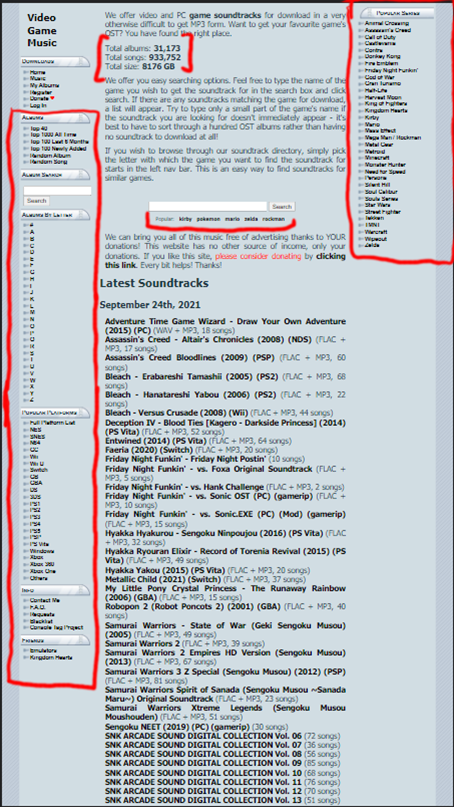
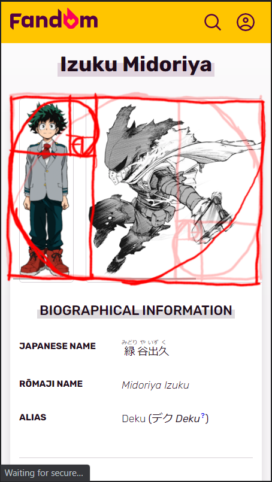

Visual Hierarchy
Nintendo

The overdrawn numbers show how the viewer's attention travels from one part of the screen to another. The viewer first looks at the large, panning mural in the background (grabs attention), then at the large logo (states what the site is all about), and so forth (other options to explore).
Hick's Law
Khinsider Downloads
This website is an archive of nearly a million different songs. With so many options, it's important to limit the amount of songs seen when exploring the selection. The indicated areas are specified categories that help the viewer filter and search for they want amongst the mass.
Rule of Thirds
fandom.com
It was tricky to decide how to section this image up since you can either choose the left side or the right (either side works). I chose to follow the left side. With the golden spot between the two pictures the viewer can see the awesome yet kind-hearted character in full.